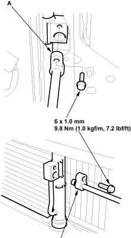

- Discharge the refrigerant.
- Remove the front bumper.
- Remove the bolts, then disconnect the discharge line (A) and the condenser line (B) from the condenser. Plug or cap the lines immediately after disconnecting them to avoid moisture and dust contamination.

- Remove the mounting bolts, then remove the condenser by lifting it up. Be careful not to damage the radiator and condenser fins when removing the condenser.

- Install the condenser in the reverse order of removal and note these items.
If you are installing a new condenser, add refrigerant oil (DELPHI DH-PS) (see page 21-7).
- Replace the O-rings with new ones at each fitting and apply a thin coat of refrigerant oil before installing them. Be sure to use the right O-rings for HFC-134a (R-134a) to avoid leakage.
- Immediately after using the oil, reinstall the cap on the container and seal it to avoid moisture absorption.
- Do not spill the refrigerant oil on the vehicle; it may damage the paint; if the refrigerant oil contacts the paint, wash it off immediately.
- Be careful not to damage the radiator and condenser fins when installing the condenser.
- Charge the system.
- Check for system performance (see page 21-30).